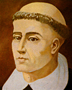

главная  персоналии
персоналии  Томас Торквемада
Томас Торквемада
главная |

Личность в историикраткая энциклопедияПроект «Личность в истории» посвящен людям — современникам грандиозных исторических событий, носителям редких качеств или людям, взгляды которых опередили их время. |
|||||
Коротко |
Статьи |
Персоналии |
Литература |
||
Томас Торквемада |
|||||
|
«Те, которые оказывают непосредственное противодействие инквизиционному процессу или приведению в исполнение его приговора, а также оказывают прямую поддержку в этом своим советом, помощью или покровительством, хотя и весьма виновны, не должны быть, однако, рассматриваемы как еретики». (Я. Шпренгер., Г. ??нститорис. "Молот ведьм".). |
 Томас Торквемада |
||||
Биографическая справкаТорквемада (Tourquemada) Томас, (1420-1498), духовник королевы ??забеллы, великий инквизитор ??спании. Ввел в практику аутодафе. Чрезвычайно активно преследовал еретиков, мусульман и евреев. В 1492 г. добился изгнания евреев из ??спании. Цитаты«Страшную известность приобрёл инквизитор Торквемада, который за годы, когда он возглавлял инквизиционный трибунал, сжёг свыше 8 тыс. «неверных» (мусульман и евреев) и еретиков». (ВСЕМ??РНАЯ ??СТОР??Я В ДЕСЯТ?? ТОМАХ., «Первым «великим инквизитором» был Томас Торквемада, который за 18 лет пребывания на этом посту организовал около 9 тысю массовых сожжений, жертвами которых были еретики и враги полиического режима..» (??стория средних веков (в двух томах ). Список литературы
|
|||||
|